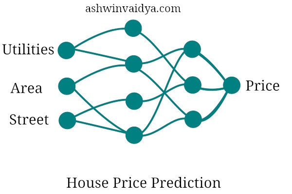
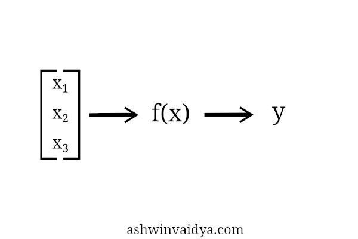
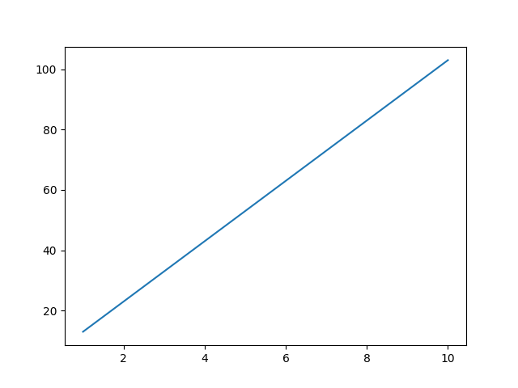
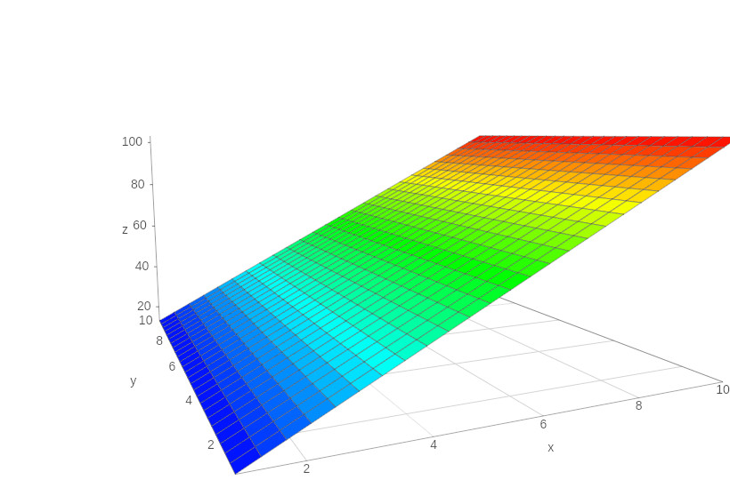
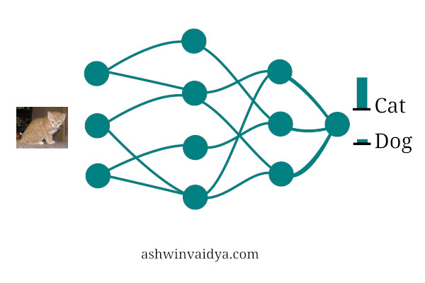
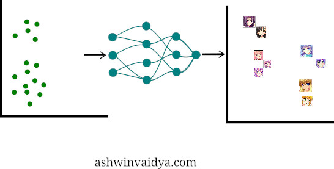
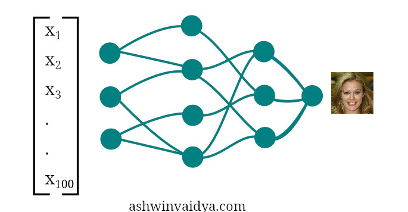
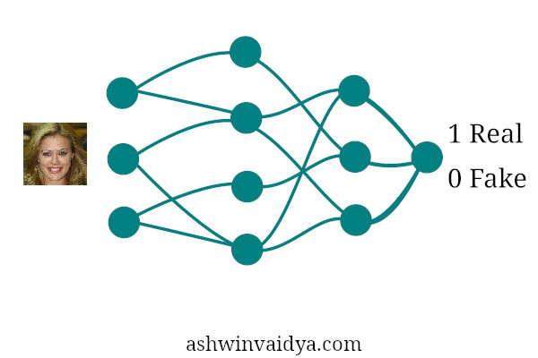
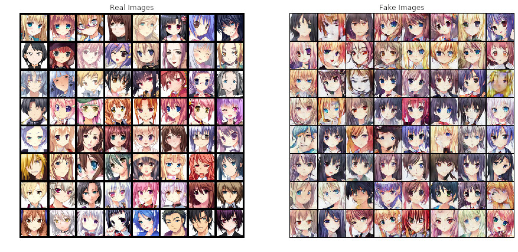
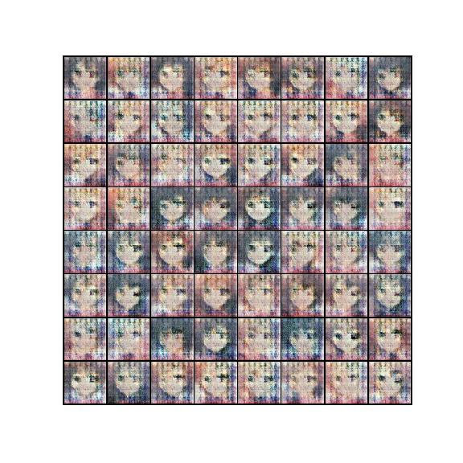

Generating faces using Deep Convolutional Generative Adversarial Network (DCGAN)
Table of Contents
The internet is abundant with videos of algorithm turning horses to zebras or fake Obama giving a talk. Earlier people were obsessed with making their photos imitate some famous artist's style, now they are obsessed with looking old. All this is possible by a kind of neural network called Generative Adversarial Network or GAN for short. GANs were first proposed by Goodfellow et. al. I had been postponing looking into GANs until recently. I have spent the past few days understanding GAN and in this post, I attempt to explain it.
Let me just recap neural networks before I go into GANs. Consider the neural network to be a function. It gets some input and produces some output.

Now, I won’t go into the internal workings of a neural network as it is a topic for another post. The main thing here is that it is called a Universal Function Approximator. That is, it can approximate any function. I’ll just represent neural networks like this from now on.

A function transforms values from input space to values in output space.
Take the example of a simple line.
$$y = 10x + 3$$
If we have the inputs (x) as 1,2,3,4,5,6,7,8,9,10, they would become 13, 23, 33, 43, 53, 63, 73, 83, 93, 103. As you can see, the function transforms the input from one value to another value.

Apart from changing one value to another, a function can also change the feature space of these values. Let’s expand on the above equation.
$$y = x$$
$$z = 10x + 3$$
If we plot this, we get a plane. We have now gone from one-dimensional input to two-dimensional output.

Generative Network
For most of the tasks, we have used neural networks as a discriminative model. Hey! is this image is of a cat of a dog. This model does not care about how the data was generated. Its task is to just classify the input.

A generative model, on the other hand, tries to model how the data was generated. If it is told that the image is of a cat, then it tries to generate the original image based on the label.
If the task is to generate images of faces, the neural network needs to learn the function that maps some input to output as faces. Something like this. 
Say, we had an input size of 100 i.e [x1, x2, ……, x100] and output as 128x128 dimension image. The network has to not only learn to transform 100 dimentional input to an image but also has to increase the feature space. 
Generative Adversarial Network
Now the question becomes how do we train such a model. This is where the adversarial part comes in. GANs consists of two networks, one to produce the image from a given input and the other to see the image and tell whether it is from the real data or generated data. Taking the example given in the paper by Goodfellow et. al., the generator can be considered as a counterfeiter of fake currency and the discriminator as police trying to detect fake currency. This competition between them improves the fakes generated by the counterfeiter untill the fakes cannot be distinguished from real.
Generator
 Discriminator
Let D(x) be the probability that the discriminator outputs. Ideally, the discriminator outputs probability 1 for real images and 0 for fake images. Let G(z) be the output images of the generator given initial vector z. We want the discriminator to correctly classify images of both the class. The discriminator should maximize $$log(D(x)) + log(1- D(G(z)))$$ This means that the discriminator should maximize the probability of predicting correct classes + the probability of identifying fake images. Similarly, the generator has to minimize $$log(1-(D(G(x))))$$ That is, for fake images discriminator produces a value close to 1 (label for real images) leading to a value close to 0.
Implementation
Well, that was the meat of the algorithm. We are going to implement a variant of GAN called DCGAN (Deep Convolutional Generative Adversarial Network). This was proposed by Alec et. al. which uses CNNs instead of fully connected layers as in vanilla GAN.
The entire code is available here. I will be explaining only the important parts of the code below.
Let’s start by creating the discriminator
class Discriminator(nn.Module):
def __init__(self):
super(Discriminator, self).__init__()
self.main = nn.Sequential(
nn.Conv2d(nchannels, ndf, 4, stride=2, padding=1, bias=False),
nn.LeakyReLU(negative_slope=0.2, inplace=True),
nn.Conv2d(ndf, ndf*2, 4, stride=2, padding=1, bias=False),
nn.BatchNorm2d(ndf*2),
nn.LeakyReLU(negative_slope=0.2, inplace=True),
nn.Conv2d(ndf*2, ndf*4, 4, stride=2, padding=1, bias=False),
nn.BatchNorm2d(ndf*4),
nn.LeakyReLU(negative_slope=0.2, inplace=True),
nn.Conv2d(ndf*4, ndf*8, 4, stride=2, padding=1, bias=False),
nn.BatchNorm2d(ndf*8),
nn.LeakyReLU(negative_slope=0.2, inplace=True),
nn.Conv2d(ndf*8, 1, 4, stride=1, padding=0, bias=False),
nn.Sigmoid()
)
def forward(self, input):
return self.main(input)
The discriminator is a standard CNN which takes image data as input and produces a single output. One thing to note is that this architecture does not have max-pool layer but uses batch normalization.
Now, we create the generator.
class Generator(nn.Module):
def __init__(self):
super(Generator, self).__init__()
self.main = nn.Sequential(
nn.ConvTranspose2d(nz, ngf*8, 4, stride=1, padding=0, bias=False),
nn.BatchNorm2d(ngf*8),
nn.ReLU(True),
nn.ConvTranspose2d(ngf*8, ngf*4, 4, stride=2, padding=1, bias=False),
nn.BatchNorm2d(ngf*4),
nn.ReLU(True),
nn.ConvTranspose2d(ngf*4, ngf*2, 4, stride=2, padding=1, bias=False),
nn.BatchNorm2d(ngf*2),
nn.ReLU(True),
nn.ConvTranspose2d(ngf*2, ngf, 4, stride=2, padding=1, bias=False),
nn.BatchNorm2d(ngf),
nn.ReLU(True),
nn.ConvTranspose2d(ngf,nchannels, 4, stride=2, padding=1, bias=False),
nn.Tanh())
def forward(self, input):
output = self.main(input)
return output
The generator takes the 100 dimension vector and converts it into an image. To do this it needs to up-sample the input. Up-sampling is done by transposed convolutional layer. A convolutional layer down-samples the image by passing a filter over it. The transposed convolutional layer works oppositely. This image shows the transposed convolutional operation. These layers help increase feature space so that we can go from 100 dimentional input to 128x128 RGB images.
We initialize the two networks as
netG = Generator().to(device)
netD = Discriminator().to(device)
Now that we have defined the two networks, we can train the model. In each epoch for the batch of images we do the following:
We first take the real images and pass them through the discriminator. The real labels and the output of the network is passed to the loss function.
netD.zero_grad()
real = data[0].to(device)
b_size = real.size(0)
label = torch.full((b_size,), real_label,device=device)
output = netD(real).view(-1)
errD_real = criterion(output, label)
errD_real.backward()
We then generate some random noise and pass it through the generator to get the fake images. These images with their label are passed to the loss function.
noise = torch.randn(b_size, nz, 1, 1, device=device)
fake = netG(noise)
label.fill_(fake_label)
output = netD(fake.detach()).view(-1)
errD_fake = criterion(output, label)
errD_fake.backward()
Finally, we do a single gradient step on the discriminator.
errD = errD_real + errD_fake
optimizerD.step()
Next, we train the generator. Labels are gathered by passing the fake images through the discriminator. The target labels are set to 1 this time as we want the generator to learn to create realistic images. The error for the generator is calculated using the labels provided by the discriminator and the target label (1 for each image).
netG.zero_grad()
label.fill_(real_label)
output = netD(fake).view(-1)
errG = criterion(output, label)
errG.backward()
optimizerG.step()
That is it. These two networks finally reach a point where neither improves each other. This is the saddle point.
Finally, you get the results like these. 
Here is a gif of the generated images over training:

You can grab the entire code here.
Thanks for reading 😎